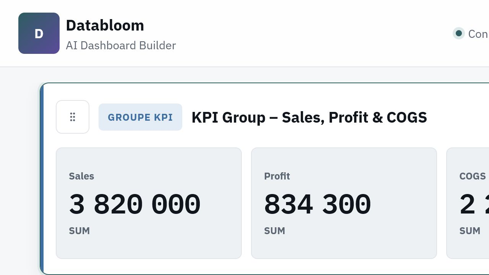
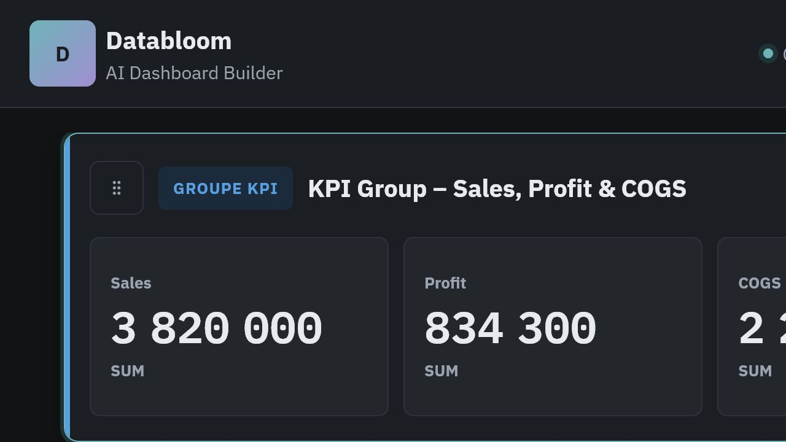
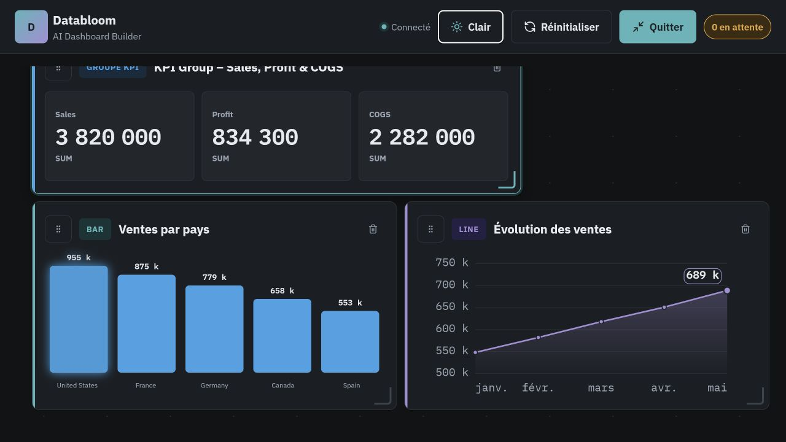
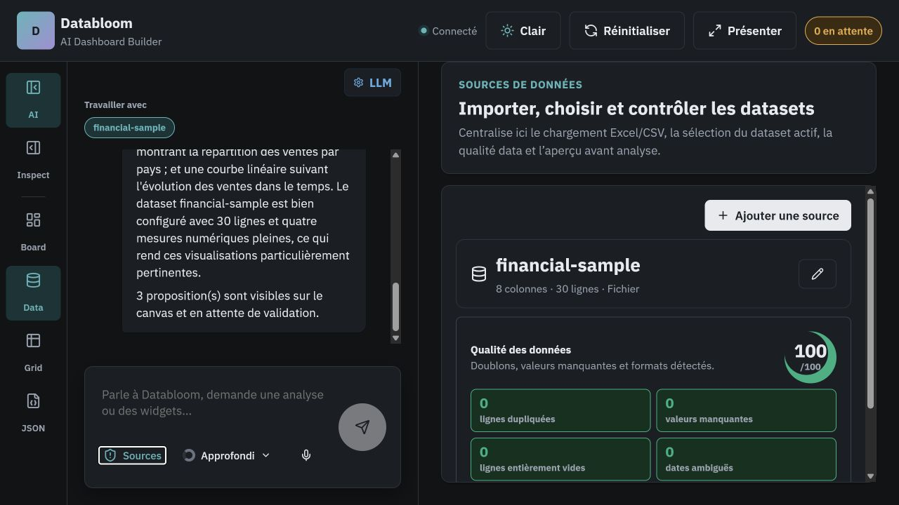

Tes fichiers et tes modèles restent sur ta machine.
Local-first · privé · ouvert
Tes données parlent.
DataBloom les met en scène.
Importe un fichier, dialogue avec tes données et transforme-les en tableaux de bord interactifs — sans abandonner leur confidentialité.
Vue données

Bloom généré

Tu choisis ton fournisseur LLM et gardes le contrôle.
Une base transparente, inspectable et extensible.
De la donnée brute à la décision
Une conversation suffit
pour faire fleurir l’essentiel.
DataBloom profile les colonnes, comprend ta demande et compose les bons widgets sans figer ton analyse.
Tes données
CSV, Excel ou JSON.
Demande à l’IA
Explique ton besoin en langage naturel.
Bloom généré
Valide puis édite ton dashboard.
Dashboard construit avec DataBloom

La confiance avant le graphique
Comprends la qualité
de tes données avant d’agir.
Un joli graphique ne répare pas une donnée fragile. DataBloom montre ce qui est exploitable et ce qui mérite ton attention.
Types détectés
Dimensions, mesures et dates sont reconnues avant toute visualisation.
Anomalies visibles
Valeurs manquantes, doublons et incohérences sont signalés.
Analyse fiable
Les champs non agrégeables ne sont pas traités comme des métriques.
Rapport de qualité

Local-first par conception
Ton poste de travail.
Tes règles. Tes données.
DataBloom s’installe comme un outil de développement classique et reste simple à auditer.
Fichiers locaux
Les datasets ne quittent pas ton poste.
LLM au choix
LM Studio, Ollama ou un fournisseur compatible.
Contrôle total
Pas de compte obligatoire ni de télémétrie imposée.
Installation locale
$ git clone https://github.com/dandyArise/data-bloom.git
$ cd data-bloom
$ pnpm install
$ pnpm devNode.js 22+pnpm 11.9+Licence 0BSD